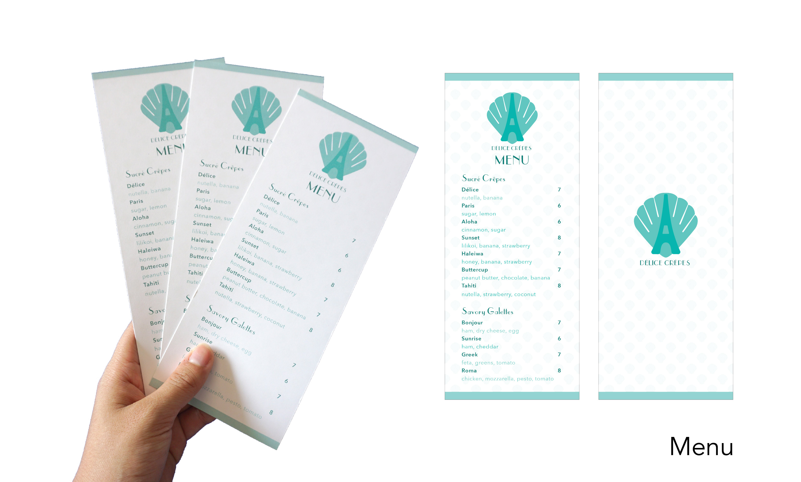
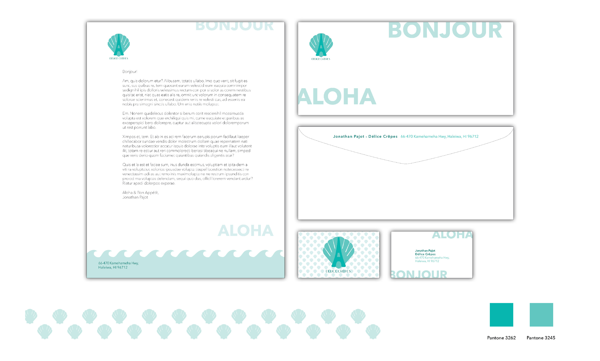
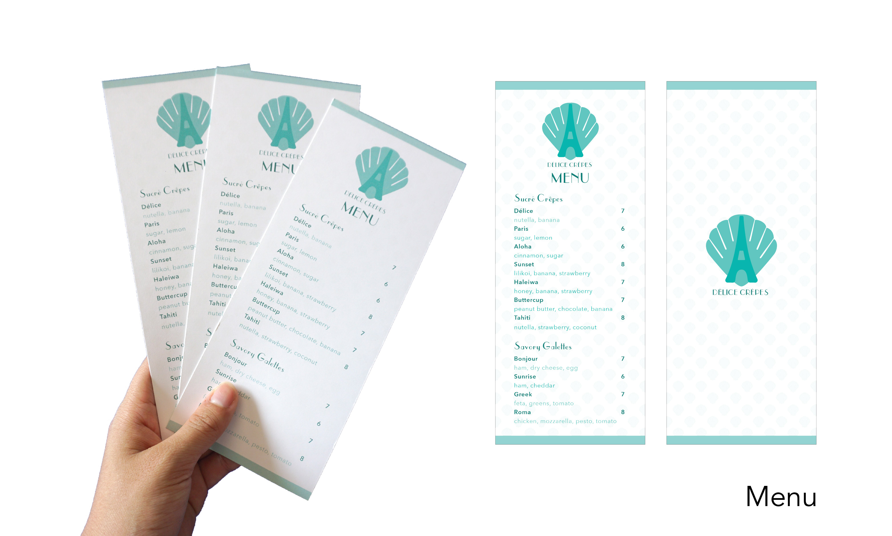
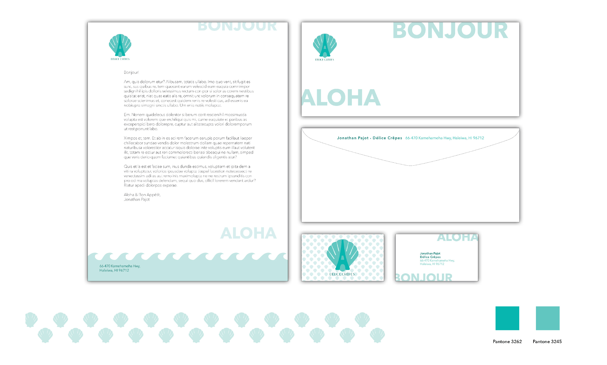

Delice Crepes Rebranded Food Truck and Vehicle Wrap
Owner Jonathan Pajot is from Brittany, France, a town known for its traditional French galettes. He originally started making crepes for friends as a way to ease his homesickness but went back to France for more culinary training to turn his love for crepes into a business in the North Shore. He sells authentic french crepes made with local ingredients.
I've decided to give his charming food bus a rebranded logo, business system, bus wrap, and menu. A unique part of Delice Crepe's story is the 78' VW Bus. When choosing a vehicle for his crepe business, he instantly connected with the 'classic' style of the bus. I decided to stick with the classic style while utilizing a refreshing retro turquoise. The menu is a rackard size, convenient for taking on the go and storing in Pajot's tiny work station.
Service: Logo Design, Branding
Skills: Sketching, Adobe Illustrator, Adobe Photoshop
 


